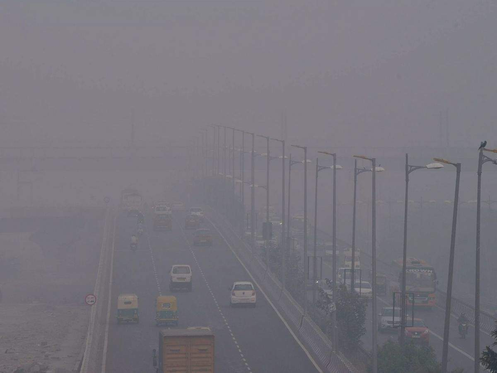

दिल्ली और आसपास के शहर गैस चैम्बर बन गए हैं, इसका सबूत है कि दिल्ली-एनसीआर के 73% घरों में अब 1 या ज्यादा व्यक्ति प्रदूषण से जुड़ी दिक्कतों से पीड़ित हैं, जैसे कि खांसी,सर्दी, गले में खराश, सिरदर्द, आंखों में जलन और सांस लेने में कठिनाई आदि. इस क्षेत्र में राजधानी दिल्ली में सबसे ज्यादा 85% घर हैं जहां एक या उससे अधिक व्यक्तियों को प्रदूषण वाली बीमारियों का सामना करना पड़ रहा है।

स्मॉग के दुष्प्रभाव - खांसी और गले तथा सीने में जलन - जब आप स्मॉग के संपर्क में आते हैं तो हवाओं में हाई लेवल का ओजोन मौजूद होने की वजह से आपके श्वसन तंत्र पर बुरा असर पड़ता है। इससे सीने में जलन होती है तथा खांसी की भी समस्या उत्पन्न हो जाती है। अस्थमा में हानिकारक - अगर आप अस्थमा के मरीज हैं तो स्मॉग आपके लिए ज्यादा घातक हो सकता है।
सांस लेने में तकलीफ और फेफड़े खराब होना - स्मॉग की वजह से सांस लेने में तकलीफ तो होती ही है साथ ही साथ इसकी वजह से अस्थमा, एम्फीसिमा, क्रोनिक ब्रोंकाइटिस और अन्य श्वांस संबंधी समस्याएं अपनी गिरफ्त में ले लेती हैं। इसकी वजह से फेफड़ों में संक्रमण भी हो सकता है। फैक्टरियों से निकलने वाला कचरा, दिल्ली शहर से निकलने वाला कूड़ा शहर के जलाशयों की सूरत बिगाड़ रहा है. गंदा पानी पीने के कारण लोगों को डायरिया और पेट से संबंधी अनेक बीमारियां होती हैं।
बहरहाल, इस साल कोरोना संकट के बीच प्रदूषण फिर खतरे की घंटी बजा रहा है। दिल्ली में बढ़ते प्रदूषण ने यहां के लोगों की उम्र 10 साल कम कर दी है। पक्षियों की उड़ान में भी स्मॉग से दिक्कत अलसुबह सड़कों पर विचरण करने वाले पशुओं के लिए विजिबिलिटी कम होने और हवा में जहरीले तत्वों की मौजूदगी उन्हें विचलित कर रही है. ऐसे में कुछ जगहों पर यह भी देखा जा रहा है कि पशु लंबे समय तक अपनी जगह ही नहीं छोड़ते हैं, जबकि परिंदों की उड़ान भी अब पौ फटने के काफी देर बाद ही शुरू होती है. जानकार बताते हैं कि खासतौर पर ऊंचाई पर उड़ान भरने वाले परिंदों के लिए स्मॉग दिक्कतें देने वाला है.